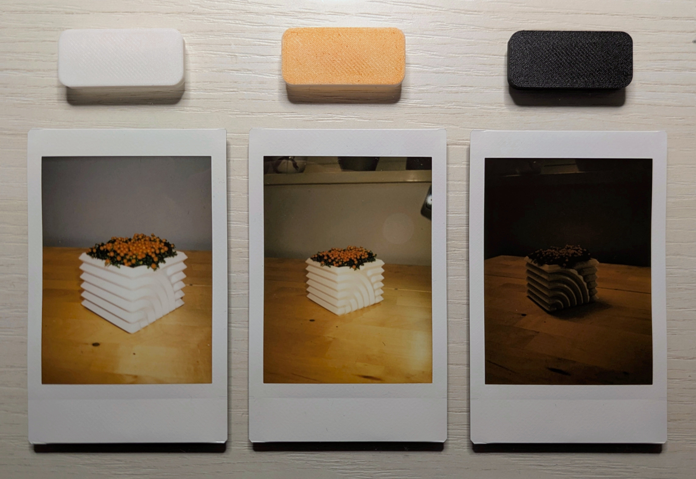

I noticed that the flash of the instax Mini 41 was too strong for indoor or dim light conditions, so I 3d printed two filters made of translucent white Sunlu PLA+, varying in thickness (0.8mm and 2.4mm), and a completely black one.
I tried painting the white filters with markers. Here are some comparisons:
The 0.8mm filter is a good compromise between detail and fidelity in the rendition of colors, that's because the 2.4mm filter rendered the colors even more faithfully to those seen by the eye, but completely lacked details on the leaves. The blue colored filter turned out to be far dimmer than my expectations.
Here I tried the black filter too: I really appreciate the more dramatic and gloomy effect that the total absence of a flash gives off.
On the other hand, the orange filter matched my expectations being only slightly warmer than the white one.